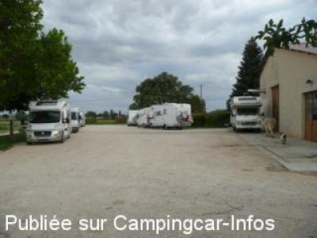
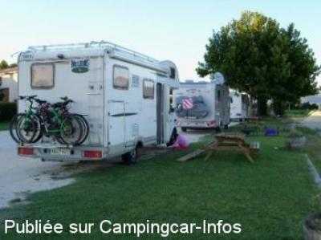
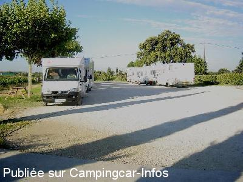

ASN = Aire de services avec stationnement nuit possible de :
VALRÉAS
(N° 626)
Accès/adresse :
Route de Montélimar
Domaine de Lumian
84600 VALRÉAS
Domaine de Lumian
84600 VALRÉAS
Latitude : (Nord) 44.3939° Décimaux ou 44° 23′ 38′′
Longitude : (Est) 4.96328° Décimaux ou 4° 57′ 47′′
Tarif : Gratuit
Services :


Repas de Groupe sur commande au coeur de notre cave.
Tous commerces.
Autres informations :
Ouvert toute l'année.
6 emplacements
Stationnement limité 24 h
GMS +33 (0) 608 099 686

Le 22/05/2012 par seb74

Le 02/09/2011 par Correcaminos

Le 19/08/2005 par jeanschneiter
de
lebullois
le 19/01/2016 :
Nous avons passé la nuit de St Sylvestre devant le domaine, calme et avec une super dégustation comme d'ab. Le Jean 22 est vraiment très bon. Merci encore.
Nous étions 3 CC.
Nous avons passé la nuit de St Sylvestre devant le domaine, calme et avec une super dégustation comme d'ab. Le Jean 22 est vraiment très bon. Merci encore.
Nous étions 3 CC.
de
lolita4845
le 16/09/2015 :
nous avons séjourné sur cette aire le 08 septembre...c'est vrai que les gens sont très accueillants .
notre nuit fut calme(2CC) et le lendemain nous avons assisté à la mise en bouteille de la cuvée 2015(vendanges commençaient 1 semaine plus tard.!)
nous avons séjourné sur cette aire le 08 septembre...c'est vrai que les gens sont très accueillants .
notre nuit fut calme(2CC) et le lendemain nous avons assisté à la mise en bouteille de la cuvée 2015(vendanges commençaient 1 semaine plus tard.!)
de
Toutous Pierre
le 16/07/2015 :
Nous avons passé plusieurs nuits (en juin) sur cette aire pour pouvoir assister sur les conseils des propriétaires, chaleureux, à la fête du petit Saint-Jean. Fête remarquable mêlant histoire et religion, unique en son genre. Je rajouterai que leur vin bio est excellent. L'aire privée, calme, dispose de tous les services indispensables et gratuits. Un grand merci aux propriétaires pour le séjour chez eux.
Nous avons passé plusieurs nuits (en juin) sur cette aire pour pouvoir assister sur les conseils des propriétaires, chaleureux, à la fête du petit Saint-Jean. Fête remarquable mêlant histoire et religion, unique en son genre. Je rajouterai que leur vin bio est excellent. L'aire privée, calme, dispose de tous les services indispensables et gratuits. Un grand merci aux propriétaires pour le séjour chez eux.
de
JOSSERAND
le 22/05/2012 :
Accueil très chaleureux de la part des propriétaires qui ont à cœur le partage de leurs vignobles. Emplacement plat, calme. Toujours l'ânesse et la chèvre en liberté pour distraire les enfants. Très bon vin issu d'agriculture biologique. Recommande vivement cet endroit. Merci à eux pour leur accueil.
Accueil très chaleureux de la part des propriétaires qui ont à cœur le partage de leurs vignobles. Emplacement plat, calme. Toujours l'ânesse et la chèvre en liberté pour distraire les enfants. Très bon vin issu d'agriculture biologique. Recommande vivement cet endroit. Merci à eux pour leur accueil.
de
Jean Claude MERCIER
le 23/05/2011 :
Je reviens de cette aire de VALREAS, je confirme, des gens sympa et chaleureux, une distraction à ne pas manquer la promenade du petit cheval de l'ane et son ammie inséparable la chèvre.
Je ne commente pas les produits achetés "FORMIDABLE".
Nous y retournerons lors de notre prochaine visite dans l'Enclave des Papes.
Je reviens de cette aire de VALREAS, je confirme, des gens sympa et chaleureux, une distraction à ne pas manquer la promenade du petit cheval de l'ane et son ammie inséparable la chèvre.
Je ne commente pas les produits achetés "FORMIDABLE".
Nous y retournerons lors de notre prochaine visite dans l'Enclave des Papes.
de
Philippe BOYER
le 12/12/2010 :
Y avons passé la soirée et nuit du 11 au 12 décembre 2011. Accueil très chaleureux, passionnant et passionné de la Propriétaire de ce magnifique Domaine qui vend d'excellents vins et produits de cette belle "Enclave des Papes". L'aire est bien plate, ombragée (à la belle saison) et tout est gratuit et à saciété (eau et électicité 16 Amp.) Encore un grand MERCI aux propriétaires des lieux.
Y avons passé la soirée et nuit du 11 au 12 décembre 2011. Accueil très chaleureux, passionnant et passionné de la Propriétaire de ce magnifique Domaine qui vend d'excellents vins et produits de cette belle "Enclave des Papes". L'aire est bien plate, ombragée (à la belle saison) et tout est gratuit et à saciété (eau et électicité 16 Amp.) Encore un grand MERCI aux propriétaires des lieux.
de
milinawel2
le 14/07/2010 :
Une nuit début juin, dans ce Domaine de Lumian, adhérent France Passion. Calme et accueil chaleureux, dégustation de vin bio excellent pour les amateurs et autres produits bio du pays.
Borne pour plein d'eau et vidange disponible facile d'accès.
Une nuit début juin, dans ce Domaine de Lumian, adhérent France Passion. Calme et accueil chaleureux, dégustation de vin bio excellent pour les amateurs et autres produits bio du pays.
Borne pour plein d'eau et vidange disponible facile d'accès.
de
Dudude 51
le 17/01/2007 :
Bonjour, nous y sommes passé en août, c'est vrai que c'est un endroit super avec un accueil très agréable.
Bonjour, nous y sommes passé en août, c'est vrai que c'est un endroit super avec un accueil très agréable.
de
Sophie Henry
le 04/01/2007 :
De passage dans la région entre Noël et Nouvel-An, nous avons constaté que le Domaine du Lumian bénéficie maintenant du label "AB" agriculture biologique ; un plus pour la nature et les consommateurs ! Merci !...
De passage dans la région entre Noël et Nouvel-An, nous avons constaté que le Domaine du Lumian bénéficie maintenant du label "AB" agriculture biologique ; un plus pour la nature et les consommateurs ! Merci !...